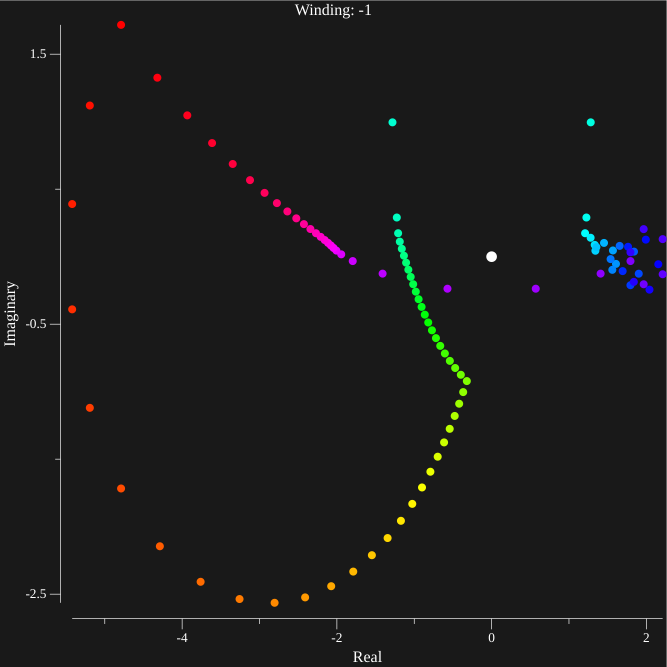

Case II
Explanation
This page deals with Case II as described on the homepage, which results in the complex zeroes. We apply the argument principle in order to obtain an approximate location of the zeroes. The argument principle states that for meromorphic functions
The left hand side is a contour integral in counter clockwise direction along a complex path (like the one shown in white). It evaluates to the number of counter clockwise revolutions around the origin that the output of \(f(z)\) has. The argument principle states that this value equals the number of zeroes (Z/blue) minus the number of poles (P/red). This means in this case the integral will evaluate to \(4-5=-1\)
In our case we approximate the function
The zeroes of this function are the solutions to the α-Euler equation.
f(λ), g(λ) are approximated by continued fractions to a reasonable depth where increases of depth cause no noticeable changes. In order get the approximate location of zeroes, a grid of contours is constructed, and the winding number for each contour is calculated by sampling many points. Contours with winding numbers greater than one must have at least one zero, and are investigated further recursively up to a fixed depth. They are investigated by splitting up the contour into a new grid of contours, and repeating the previously described process. This allows one to obtain a relatively small contour in which a zero must be located.
Examples & Methods
The case p=[2, 0] q[-1,-1] α=1 is discussed as an example. A 7x7 square centered at \(0.1+0.1i\) is divided into 49 squares with side length one (the slight offset from the origin is intended to avoid (0,0) which cannot be approximated using our method). The winding number for each contour is calculated by sampling equidistant points along the contour and applying F(λ) to each point, then calculating how many times the output goes around the origin. However a few problems arise, if enough points are not sampled, such contours may arise
While the obvious solution is to sample more points, for certain contours the appropriate number of points would take approximately an hour to calculate. The middle ground solution used in the program is based on interval jumping. The contour is parametrized with the function \(c(t)\) with integers from 1 to 100,000 then, the following process occurs
- \(step=0.01\)
- \(t_0\)=1
- \(Plot(F(c(t_0))\)
- while \(t_0,\leq 100,000\)
- \(\Delta t=1\)
- while \(||F(c(t_0+\Delta t))-F(c(t_0))||\leq step\)
- \(\Delta t*=2\)
- \(t_0+=\Delta t/2\)
- \(Plot(F(c(t_0))\)
This method takes less than 5 minutes per high precision contour and produces consistently smooth results like the one shown below

Suspicious countours are then further investigated by splitting the source square into a new 7x7 grid, then applying the same method. This produces a good bound on the location of zeroes. A few contours and there input squares (which give a bound on the location of the zero) are listed below.
<-0.114, 0.457> ⇒ <0.029, 0.314> : In this case, while the bounds may be small, the function still takes large values along the contour

<-0.829, 1.600> ⇒ <-0.686, 1.457> : Here we see that the values along the countour are very small, which leads to gaps in the plot due to the chosen "step" size.

{kind=link}